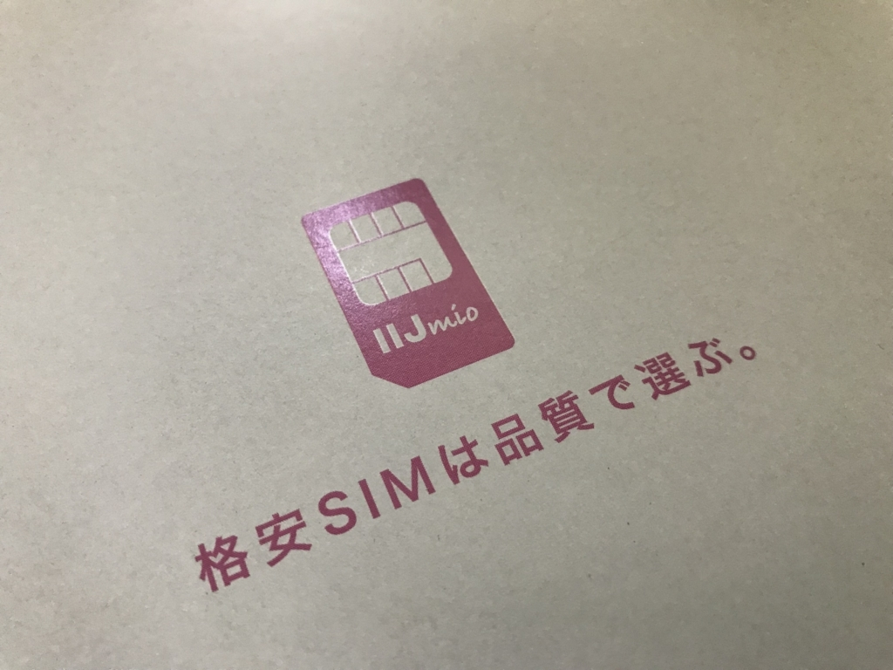
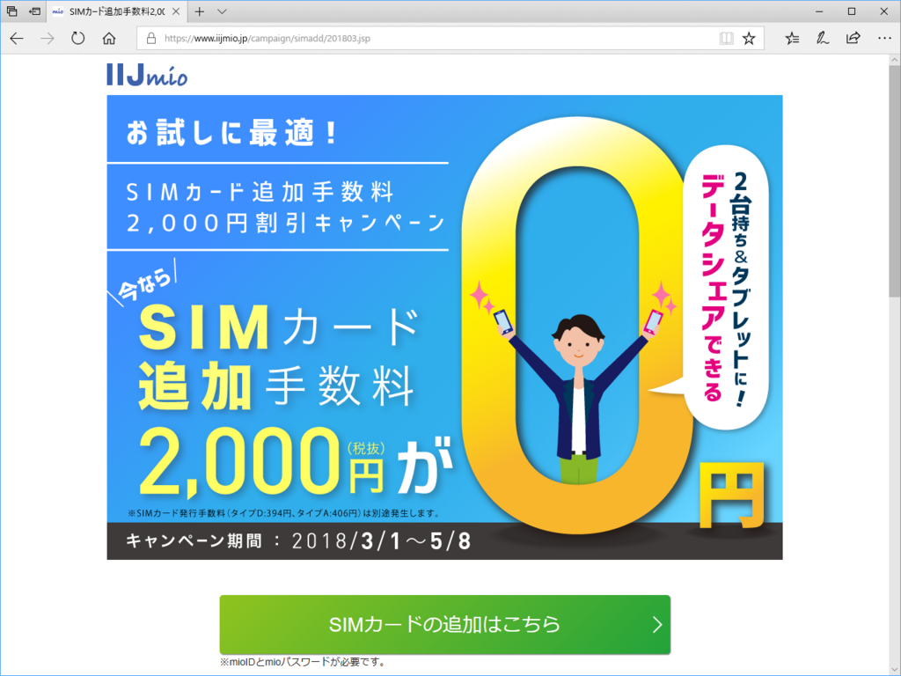

日記：キャンペーンのビッグウェーブに乗って IIJ の SIM を追加
公開日：

今日はとくに何事もなく。淡々と仕事をしていたのだけど、3時ぐらいかな、トイレでうんちしてたらクロネコヤマトがやってきて、IIJmio の SIM を置いて行ってくれました。
関係ないけど、一人暮らしだったらクロネコがきそうな時間帯にうんちなんかしないわけですよ。我慢して仕事でもしてるわけですよ。その点、同居人がいるといろいろ自由だな。受け取りを頼めるし。でも、考え事に夢中になり過ぎてうんちを流すの忘れたり*1、トイレに鍵をかけるのを忘れたりすると大変なことになるのは不自由だと思う。一人だったら便所の扉をあけっぱなしでうんちしても怒られんしな。一口に「自由」っていっても、いろんな種類の「自由」があるんやな。

IIJmio の SIM はこのキャンペーンにのっかって注文したもの。SIM カードの追加手数料（2,000円）がタダ！ 買ったばっかりの iPad mini 4 に挿す SIM が足りなかったので、ちょうどよかった。もう1枚ぐらい足してもいいんだけど、地味に月額料金があがるわけで……2,000円お得だからって油断していると、それ以上とられちゃうから自重、自重。
SIM ピンで iPad mini 4 のトレイをあけて SIM を挿し、テキトーに「iij iOS」とか検索して iOS 向けのプロファイルをダウンロード＆インストール*2すれば簡単にモバイル回線が使えるようになりました*3。
実はこの前の 大分旅行でソフトバンク回線のデータ容量を速攻使い切ってしまったのだけど、これでカバンにいれて iPad をモバイルルーター代わりにできるし、もちろんそのまま使っちゃってもいいし。ほんと、最近はいろいろ便利になって、若い子がうらやましいと思います。
そういえば、IIJmio のファミリーシェアプランは容量がちょっと増えたんだっけ。
2GB なんかあっという間だけど、ないよりはあるとうれしい。